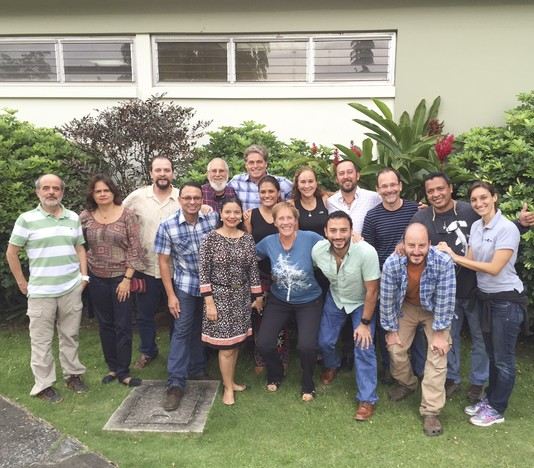
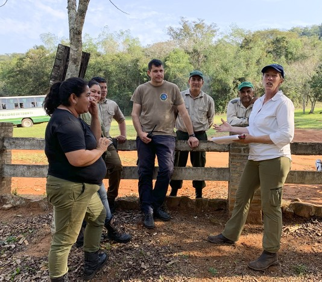

Welcome to Aligning Visions, a private consulting firm managed by Paquita Bath, that builds the capacity of conservation organizations to achieve exceptional results around the globe. Aligning Visions works on critical global conservation issues with committed and highly successful clients. Since 2005, clients have generously shared their learning and strategies, collaborated to create high-energy, fun, and participatory team interactions, and repeatedly recommended Aligning Visions to others. As the founder of Aligning Visions, I am energized, ever hopeful about our ability to make positive changes for our environment, and totally dedicated to the success of my clients — nonprofits, governments, donors, and communities committed to ecosystem conservation for biodiversity and for people!


Home
Scroll to Top